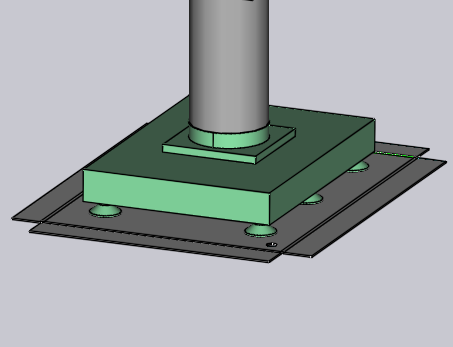

Import uchopovače z DXF
Vakuový sací uchopovač pro stroje BendMaster lze importovat ze souboru DXF. Soubor DXF představuje horní pohled na uchopovač (horní pohled znamená ze sacích misek, NE ze stroje BendMaster). Entity POLYLINE v souboru DXF poskytují tvar desky uchopovače a entity TEXT poskytují další informace o uchopovači (jako je jeho název, tloušťka a umístění sacích misek).
Soubory v požadovaném formátu (DXF, ARV nebo GEO) lze importovat do databáze ohýbání.
Import uchopovače:
-
Otevřete Database uvnitř TecZone Bend.
-
Vyberte možnost Bend Grippers ze seznamu.
-
Klikněte na možnost Import… a vyberte uchopovač jako soubor DXF z adresáře.

Zde je ukázka, jak tento uchopovač vypadá po importu (zobrazen ve dvou pohledech zespodu a shora).

Základní uchopovač
Viz jednoduchý výkres zobrazený níže, který definuje uchopovač a může být uložen jako soubor DXF pro zpětný import do inventáře uchopovačů.

Zde je několik důležitých bodů o tom, jak je DXF nakreslen:
-
Počátek výkresu (0,0) odpovídá středu zápěstí robotu. Můžete to vidět reprezentované bodem a kruhem na obrázku. (Jak bod, tak kruh nejsou ve skutečnosti potřebné pro import uchopovače, protože střed uchopovače je implicitně vždy v počátku).
-
Tento výkres má také několik entit POINT představujících každou ze sacích misek umístění. Opět, ty jsou primárně pro zpřehlednění výkresu a nejsou skutečně používány importérem uchopovačů (polohy sacích misek jsou specifikovány textovými entitami).
-
Skutečný tvar desky je nakreslen jako uzavřené entity POLYLINE. Pokud máte další polyčáry uvnitř vnější, stanou se otvory v desce.


Dvouvrstvý uchopovač
Mírně složitější uchopovače lze modelovat pomocí samostatné vrstvy BASEPLATE. Vytvořte vrstvu s názvem BASEPLATE v souboru DXF a nakreslete některé uzavřené tvary POLYLINE v této vrstvě. Tato vrstva pak může mít samostatné limity extruzí Z specifikované klíčem BASEPLATEEXTENT. Nyní jsou přidány nástroje potřebné k vytvoření a úpravě vrstev.
-
Klikněte na Related když je výkres upravován.
-
Vyberte menu Layers pro přidání nových vrstev, jejich přejmenování, nastavení barev a změnu stylů čar.

-
Ve výkresu kliknutím na entitu můžete změnit vrstvu této entity.

Vrstva se zobrazí v panelu entity pouze v případě, že ve výkresu existuje více vrstev. -
Po úpravě výkresu pomocí těchto nástrojů uložte výkres ve formátu DXF. Zde je DXF nakreslený pomocí takové vrstvy BASEPLATE (zobrazeno zeleně na obrázku).

Pro tento uchopovač se zápěstí rozprostírá od Z=0 do Z=23. Potom se základní deska (zelená) rozprostírá od Z=23 do Z=40, jak je označeno klíčem BASEPLATEEXTENT. Nakonec se skutečná deska uchopovače (držící sací misky) rozprostírá od Z=40 do Z=63, jak je označeno klíčem PLATEEXTENT. Deska uchopovače má také některé šestihranné otvory. Po importu vypadá tento uchopovač jako obrázek níže:

Vícevrstvý uchopovač
Vícevrstvé uchopovače jsou aktualizovanou verzí dvouvrstvých uchopovačů, ve kterých lze vytvořit a importovat více než dvě vrstvy pomocí TecZone Bend. Pro použití vícevrstvého uchopovače musí DXF obsahovat text VERSION = 2. Ukázkový vícevrstvý uchopovač je zobrazen níže:

Každá vrstva musí být definována se svými rozsahy jako LAYER_1 = 23 : 35. Entity v této vrstvě budou přidány do těchto rozsahů. Podobně jsou mísy definovány ve formě CupNo = X pos, Y pos, [Cup type, Mounting height, Cup group].
| Pozice X a Y jsou povinné. |
Různé možné definice pro sací misky jsou vysvětleny níže:
CupNo = X pos, Y pos s názvem mísy specifikovaným v CUPNAME jako v předchozí verzi
CupNo = X pos, Y pos, Cup type, přičemž každý typ mísy je definován samostatně (pro oválné
misky se názvy liší s úhlem)
CupNo = X pos, Y pos, Cup type, Mounting Height
CupNo = X pos, Y pos, Cup type, Mounting Height, Cup Group
CUP1 = 275, 314, SAOB60x30_90grad_ged, 72, 2
Pokud výška montáže není specifikována, je ve výchozím nastavení uvažován maximální rozsah desky. Podobně bude skupina sací mísy nastavena na 1, pokud není definována.
| V současné době TecZone Bend nepodporuje různé výšky montáže pro sací misky. |
Po importu vypadá ukázkový uchopovač jako obrázek níže:


Vícesvodový uchopovač
Můžete vytvořit vícesvodový uchopovač (uchopovač, který má několik nezávislých vakuových svodů). Pro takový uchopovač je každé sací míse přiřazeno nenulové číslo skupiny.
Přiřaďte skupiny sacích misek pomocí speciálního formátu pro CUP1POS, CUP2POS atd., jak je zobrazeno níže:
CUP1POS = 340,120 #6
CUP2POS = 420,140 #8
Hodnota po # je číslo skupiny sacích misek pro mísu. V tomto příkladu je mísa 1 přiřazena ke skupině sacích misek 6, mísa 2 je přiřazena ke skupině sacích misek 8 atd.
Pro správnou konfiguraci vícesvodového uchopovače musí být každé míse přiřazeno číslo skupiny sacích misek tímto způsobem.
| Maximální počet sacích misek, které lze použít v uchopovači, je omezen na 100. Pokud importujete uchopovač s více než 100 sacími mísami, TecZone zobrazí chybovou zprávu o selhání importu. |
Níže uvedený obrázek ukazuje některé ukázkové uchopovače uvnitř databáze Bend Grippers.